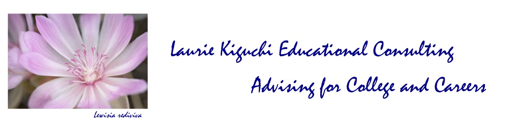
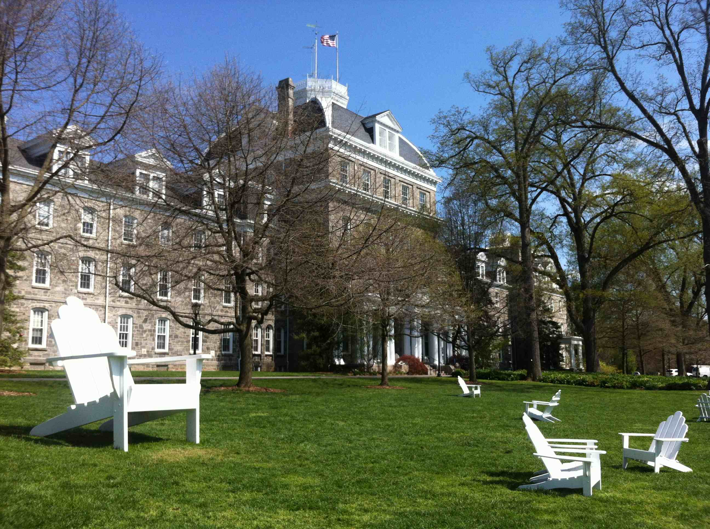
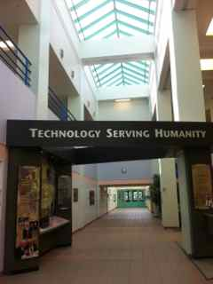
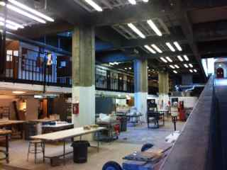
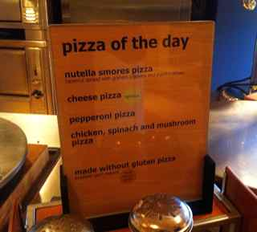
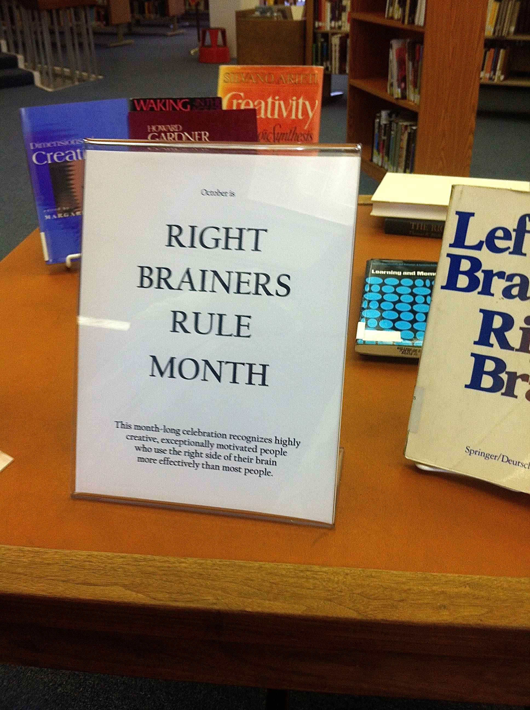
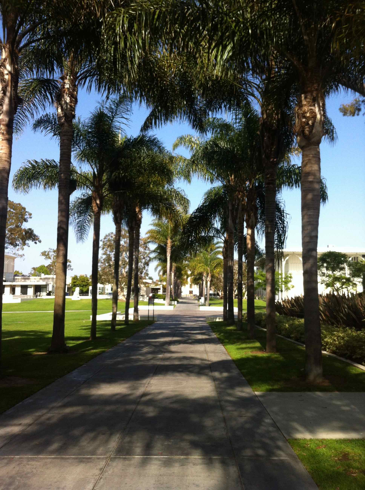
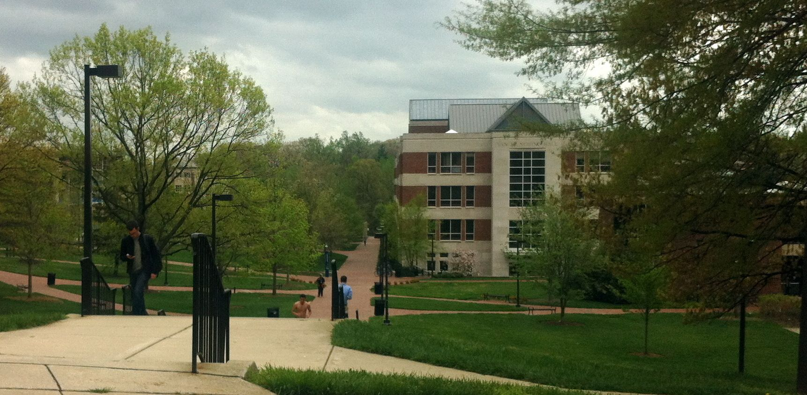

© Laurie Kiguchi
Swarthmore College
Here you will find client resources, including digital versions of selected information sheets and links compiled for special interests.
Many of these resources should be used in context or require additional explanation.
Please ask Laurie about them if you haven't reviewed them with her already!
Snapshot of One College's Admissions Process — article from The Choice blog and video from NBC's "Today " show of
the real life admissions process at Grinnell College
It's More Than a Job — MIT blog entry on the difficulty of making admissions decisions
College Searching Tips From an Ivy League Dean — video of Eric Furda, University of Pennsylvania Dean of Admissions, speaking on the college search on NBC's "Today " show
Guidelines and scripts for informational interviews
Playing sports in college plus see section below
Athletic resume tips and template
Guidelines for letters of recommendation
Templates for letters of recommendation
Guidelines for college application resumes
Template for college application resume
Guidelines for taking a course online
A Guide to College Choices for the Visual and Performing Arts
Preparing Your Portfolio for College Admissions article on art portfolios
National Portfolio Day Association guidance on National Portfolio Day
A few examples of enrichment and gap year resources plus see section below
Guidelines for after you apply
"I have made this letter longer than usual, only because I have not had time to make it shorter."
— 17th-century French philosopher and mathematician, Blaise Pascal (1623-62), written in a letter to a friend.
The original, in French: "Je n'ai fait cette lettre - ci plus longue que parce que je n'ai pas eu le loisir de la faire plus courte."
How to Write a College Essay — ideas from MIT
Essay Tips, Tricks, and Treats — from the University of Chicago
"Let Me Introduce Myself" — favorite openings lines of Stanford application essays
The UC Personal Statement — video from the University of California
College Essays — A few college essay SAMPLES, NOT TEMPLATES
The Art of the Personal Statement — Free download of a guide to writing the personal statement. 140 pages with introduction by Admissions Deans at UC Berkeley and the U of Pennsylvania, plus 14 sample essays and analysis
Application Upload: Your Voice via Video — Using videos in college applications
How to Write a Great Statement of Purpose — ideas on writing the graduate school application Statement of Purpose

© Laurie Kiguchi
Clarkson University
I have looked at many, many sites and like these the best (so far). Make the best use of your time and effort (college can be hard!).
Dartmouth Academic Skills Center
Write or Die — a writing productivity application
Time Management — UNM Valencia's guidelines for developing techniques and strategies, getting a clear sense of external reality, tackling psychological obstacles, creating a plan that is right for you
Study Guides and Strategies — great guidance on learning and studying, time and project management, reading and research, writing, memorizing and testing
How Children Succeed: Grit, Curiosity and the Hidden Power of Character by Paul Tough (2013)
Mindset: The New Psychology of Success by Carol Dweck (2007)
Learned Optimism: How to Change Your Mind and Your Life by Martin Seligman (2006)
Inside the Teenage Brain video program presented by FRONTLINE on understanding the teenage brain and why adolescents behave the way they do

© Laurie Kiguchi
San Francisco Art Institute
College websites!!! – look for financial aid policies plus scholarship opportunities
Fund Your Future by CA Student Aid Commission
FREE download of The College Solution Workbook by Lynn O'Shaughnessey
FREE download of Finding the Most Generous Colleges by Lynn O'Shaughnessey
Navigating College Financial Aid On Point National Public Radio program hosted by Tom Ashbrook, April 17, 2014
The College Board's guidance for establishing residency in another state
collegecost.ed.gov – federal College Affordability and Transparency Center
collegerealitycheck.com – interactive tool to compare college costs across institutions by the Chronicle of Higher Ed and the Bill and Melinda Gates Foundation
costoflearning.com – universal net price calculator to compare schools based on Expected Family Contribution
College Abacus — a free one-stop resource for estimating costs at colleges, often more accurate than the college's net price calculator
Estimate your Expected Family Contribution or EFC — FinAid Quick EFC Calculator, College Board EFC Calculator, Federal Student Aid FAFSA4caster
studentaid.ed.gov – federal website for student aid – FAFSA, grants, loans
studentaid.ed.gov/fafsa –official website for Free Application for Federal Student Aid (FAFSA), link to estimator for Expected Family Contribution (EFC)
profileonline.collegeboard.com – College Board website for CSS/Financial Aid PROFILE application
finaid.org – info on financial aid, scholarships, financial aid calculators
edvisors.com – easy to use info on the financial aid process — tips for understanding aid, getting, aid, filing the forms, student loans, loan repayment
FAFSA tutorial by UCSB
Fee waivers for college admissions testing and college applications may be available to qualified students. Check with the high school for requirements and procedures for obtaining. Fee waivers through the National Association for College Admission Counseling (NACAC) are also available – see Laurie if interested in these.
When Families Ask Colleges for More Money article in The Chronicle of Higher Education addressing financial aid appeals
Need financial advice about paying for college? Try Stephen Shapiro, CPA - Tuition Solutions Now
How to Win Scholarships Guide for Parents
finaid.org – scholarship listings and search engine
fastweb.com – scholarship listings and search engine
collegeboard.com – scholarship listings and search engine
scholarships.com – scholarship listings and search engine
collegexpress.com – scholarship listings and search engine
scholarshipexperts.com – scholarship listings and search engine
zinch.com – scholarship listings and search engine
Congressional Hispanic Caucus Institute – scholarship listings and search engine
Gates Millennium Scholars – scholarship opportunity for African American, American Indian/Alaska Native, Asian & Pacific Islander American and Hispanic American students with Pell Grant eligibility
Paying for College Student Resource Guide – scholarships, internships, fellowships, and website listings by deadline, courtesy of U.S. Congresswoman Lucille Roybal-Allard
I'm First – Center for Student Opportunity – first-generation college student scholarship listings and search engine
ScholarMatch – Connecting under-resourced students with donors to make college possible – create a student profile to be matched with donors
Davidson Fellows Scholarships – scholarships for extraordinary young people, 18 and under, who have completed a significant piece of work in science, mathematics, technology, music, literature, philosophy, and outside–the–box
eGFI Engineering Scholarships: A Giant List – scholarship listings related to engineering
Engineering Education Service Center: Scholarships – engineering school scholarships
10 Pretty Cool Video Scholarship Competitions – article and links to video scholarships
Disabled-World.com Disability Scholarships, MedicalGoods.com Disability Scholarships , AAHD Scholarship Program — scholarships for students with disabilities
Local scholarship opportunities – plus check with your high school
Community Foundation of Santa Cruz County scholarships
fastweb.com Santa Cruz scholarship listings
Palo Alto Medical Foundation Medical Group Pre-med Scholarship
Sigma Alpha of Omega Nu Scholarship Program
Bay Federal Credit Union — search on scholarship

© Laurie Kiguchi
Hamilton College
Do Something — ideas for what to do
TED Talks — Technology, Entertainment, and Design Ideas Worth Spreading
BIL Unconference — an open, self-organizing, emergent, arts, science, society and technology ad hoc conference
Make: Electronics, Workshop, Craft, Science, Home, Art and Design — ideas for things to make or do at makezine.com plus info on Maker Faires
MOOC stands for Massive Open Online Course. These courses are offered by major universities, as well as organizations and industry leaders. They are open to anyone, cover a wide range of topics, may be scheduled or self-paced, and are typically free, with fee-based options for additional support and/or certificates to document completion. Below are the major providers and a review of all three.
edX — developed by MIT (Massachusetts Inst. of Technology) and Harvard University, building on MIT's long-standing Open Courseware program
coursera — education platform partnering with universities and organizations
Udacity — online education in programming and technology courses
The Best MOOC Provider: A Review of Coursera, Udacity, and EdX — one view of the three largest MOOC providers
Tips for Internship Success by Nancy Griesemer of examiner.com
High school students can take college courses at Cabrillo College and UC Santa Cruz. Summer options are limited and fast-paced but represent a great opportunity if they fit the student. Offerings range from the arts and humanities to the social sciences, life and physical sciences, and engineering. Please talk with Laurie if you are interested.
SCIPP QuarkNet Summer High School Internship competitive-admission 6-week non-residential research program offered by UC Santa Cruz Institute for Particle Physics
UCSC SIP competitive-admission 8-week Science Internship Program for high school students offering research in a real graduate research laboratory representing 8 disciplines from Biological and Physical Sciences and Engineering with residential option
California State University Summer Arts residential program primarily for current CSU students, community college students and adult learners based at CSU Monterey Bay; admission requirements vary by program; high school students should check with program of interest
COSMOS competitive-admission California State Summer School for Mathematics and Science for high school students, hosted by the University of California Irvine, Davis, San Diego, and Santa Cruz
Lawrence Berkeley National Laboratory High School Programs — high school programs offered by Lawrence Berkeley National Laboratory
Stanford Pre-collegiate Studies includes summer college, residential summer institutes formerly known as EPGY Summer Institutes; Summer Humanities Institute, Stanford Medical Youth Science Program, Stanford Youth Orchestra, and other enrichment programs
Stanford Office of Science Outreach programs for high school students
Santa Clara University Spring Engineering Education Days — free competitive-admission program for high school students offered on 3 Saturdays in April
Santa Clara University Summer Engineering Seminar — free competitive-admission summer program for high school students
Cal Poly San Luis Obispo Engineering Possibilities in College residential summer program on Cal Poly SLO campus for high school students
Academy of Art University San Francisco Pre-College Art Experience six-week intensive courses in art and design, with residential option
Digital Media Academy camps and courses at multiple locations including Santa Clara University, Stanford University, UC Berkeley, UC Irvine, UCLA, UC San Diego, and others throughout the country
iD Tech camps, academies, and online programs at multiple locations including Santa Clara University, St. Mary's College of California, Stanford University, San Francisco State, UC Berkeley, and others throughout the country
YouSTEM for the San Francisco Bay Area — Bay Area opportunities for K-12 students in science, technology, engineering, and math
The Student Conservation Association opportunities for age 15 to young adult to protect, enhance, and restore national parks, marine sanctuaries, cultural landmarks, and urban green spaces across the United States. Programs available year-round, from two weeks to twelve months.
CSSSA competitive-admission California State Summer School for the Arts for high school students, hosted by the California Institute of the Arts
United World College short-term and two-year pre-university programs around the world
Harvard Summer School Secondary School Program residential program for high school students taking real Harvard courses
Cornell Summer College residential pre-college programs for talented high school students at Cornell University
Penn Summer residential high school summer programs at the University of Pennsylvania
Summer Pre-college at Skidmore five-week residential program offering liberal arts and studio art tracks
K-12 Student Summer Programs at Worcester Polytechnic Institute residential programs offering science and engineering enrichment and sports programs
Pre-College Summer Academic Programs for High School Students at the University of Rochester residential programs offering a variety of options for exploring academic interests, engineering, music (Eastman School of Music), film, mini med school, and summer abroad
Landmark College Summer and Short-Term Programs for Students Who Learn Differently to assist students with a wide range of learning differences, whether diagnosed or not
Georgetown Summer Programs for High School Students residential high school summer programs at Georgetown University
University of Chicago Summer Programs for High School Students residential high school summer program
University of Arizona for You residential high school summer programs
UC San Diego Academic Connections residential high school summer program
UCLA High School Summer Research Program — free competitive-admission eight-week summer program for high school students offered by UCLA Henry Samueli School of Engineering and Applied Science (HSSEAS) in conjunction with the Engineering Science Corps Outreach Program
Rose-Hulman Operation Catapult residential summer program for high school students offered by Rose-Hulman Institute of Technology campus in Terre Haute, Indiana
George Mason University Aspiring Scientists Summer Internship Program residential summer program for high school students sponsored by George Mason University, a public research university in Fairfax, Virginia
Summer Internship Program in Biomedical Research highly competitive NON-residential summer program for high school students sponsored by the National Institutes of Health, Department of Health and Human Services; research sites in Bethesda, Maryland and elsewhere
MIT Office of Engineering Outreach Programs for high school students offered by the Massachusetts Institute of Technology (MIT)
Western Washington University College Quest residential high school summer program offering courses for university credit
Summer Discovery precollege enrichment and business institutes supporting university summer courses for high school students at UCLA, UCSB, UT Austin, U Michigan, Georgetown, NYU, Emerson, Penn, and abroad
Summer Study precollege enrichment supporting university summer courses for high school students at Penn State, University of Colorado Boulder, Fordham University, and The Sorbonne in Paris, France
US Performing Arts Camps for college-bound and preprofessional students interested in the performing arts and digital media, held at and taught by faculty from Barnard College, Georgetown University, Mt. Holyoke, New York City Chelsea Studios and Pace University, Oberlin College, Pepperdine University, Stanford University, Texas Christian University, UC Irvine, and UCLA
Emerson College Programs for High School Students two- and five-week residential programs for high school students interested in communication and the arts including film, theater, writing, design
Otis College of Art and Design Summer of Art four-week residential program for high school students exploring art and design
Rhode Island School of Design Pre-College Program and RISD Young Artist Courses offer a variety of courses and programs focusing on art and design, with residential option
New York Film Academy Summer Film and Acting Camps for high school students, focusing on filmmaking, acting, musical theater, screenwriting, digital photography, 3d animation, video game design, broadcast journalism, music video with locations in New York City, LA, Disney Studios, Harvard University, and abroad
Architecture Summer Discovery Program at Washington University in St. Louis two-week residential program for rising juniors and seniors in high school, with possibility of college credit
Summer Medical and Dental Education Program free competitive-admission program for college freshman and sophomore students, offering a variety of academic and career experiences to support medical and dental school career preparation; sponsored by the Robert Wood Johnson Foundation
Carpe Diem Education study abroad and gap year programs with college credit
Leap Now experiential college alternative
NOLS — National Outdoor Leadership School with optional college credit
The Student Conservation Association opportunities for age 15 to young adult to protect, enhance, and restore national parks, marine sanctuaries, cultural landmarks, and urban green spaces across the United States. Programs available year-round, from two weeks to twelve months.
Enrichment Alley comprehensive enrichment program search engine
Summer program search engine by CollegeXpress
Stanford Listing of Summer Science Opportunities for High School Students including unpaid internships and other programs across the country
Co-op/internship and summer research opportunities for high school students compiled by the Rochester Institute of Technology
Internship listings compiled by Johns Hopkins University Center for Talented Youth
Engineering Education Service Center — listing of summer camps, women in engineering programs, competitions, and more
Top Summer PreCollege Programs by CollegeXpress
Engineering summer programs by CollegeXpress
A few examples of enrichment and gap year resources — info handout of selected resources
A Selected listing of Summer Research and Enrichment Programs for Undergraduates in STEM Majors — created by UC Berkeley but includes links to programs across the country
California Association for the Gifted — resources and opportunities for the gifted in California
National Association for the Gifted — resources and opportunities for the gifted
THe Davidson Institute for Talent Development — resources and opportunities for profoundly gifted students
Johns Hopkins Center for Talented Youth — academic talent search and enrichment program opportunities
Duke University Talent Identification Program — academic talent search and enrichment program opportunities
Northwestern University Midwest Center for Talent Development — academic talent search and enrichment program opportunities
Center for Bright Kids Regional Talent Center — academic talent search and enrichment program opportunities
University of California Irvine Academic Talent Search (ATS) — testing and enrichment program opportunities
Gifted Student Network — resources compiled by the University of California Irvine Center for Educational Partnerships

© Laurie Kiguchi
Santa Fe University of Art and Design
Volunteer opportunities through the Volunteer Center of Santa Cruz
Volunteer opportunities listed by UC Santa Cruz
Dominican Hospital Ways to Volunteer including opportunities and guidelines for high school and college students
Academic competitions compiled by Johns Hopkins University Center for Talented Youth
National Advisory List of Student Contests and Activities by the National Association of Secondary School Principals
Young Travel Photographer of the Year Contest
National Geographic Student Expeditions Photo Contest
Scholastic Art and Writing Awards by the Alliance for Young Artists and Writers
Contests and awards compiled by Hoagies' Gifted Education
Engineering Education Service Center — listing of engineering competitions
Contests and awards compiled by the Institute for Educational Advancement
Early college entrance programs compiled by Johns Hopkins University Center for Talented Youth
Instructions for taking assessments online
Client login to CPP/SkillsOne

© Laurie Kiguchi
Loyola Marymount University
Playing sports in college info handout
Athletic resume tips and template info handout
NCAA Guide for the College-Bound Student-Athlete
NCAA Search for division, school, or sport
Cross Country (M & W), Field Hockey (W), Football (M), Soccer (M & W), Volleyball (W), Water Polo (M)
Basketball (M & W), Bowling (W), Fencing (M & W), Gymnastics (M & W), Ice Hockey (M & W), Indoor Track and Field (M & W), Rifle (M & W), Skiing (M & W), Swimming and Diving (M & W), Wrestling (M & W)
Baseball (M), Golf (M & W), Lacrosse (M & W), >Rowing (W), Outdoor Track and Field (M & W), Softball (W), Tennis (M & W), Volleyball (M), Water Polo (W)
Cheerleading and dance (M & W), Equestrian (W), Rowing (M), Rugby (M & W), Sailing (Coed & W), Squash (M & W), Surfing (M & W)

© Laurie Kiguchi
University of Maryland
Things that matter most must never be at the mercy of things that matter least.
— Johann Wolfgang von Goethe